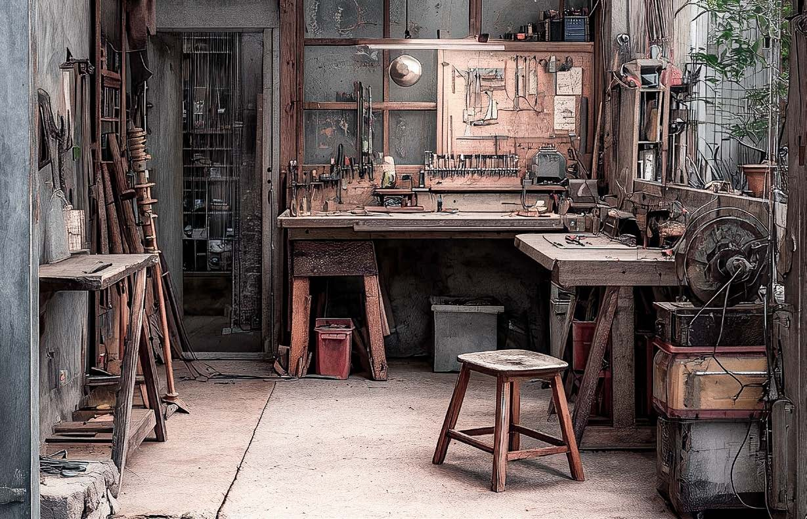

Design Methods for Prototyping

About this Course
In contemporary design practice, prototyping serves as a critical bridge between abstract ideas and tangible outcomes. Far more than a tool for validation, prototyping is a mode of inquiry - an exploratory process that allows designers to think through making, test assumptions, and uncover new opportunities for innovation. This course examines the diverse roles that prototypes play across different design contexts, scales, and stages of development.
Throughout the semester, we will explore a range of prototyping approaches - from low-fidelity sketches and mock-ups to high-fidelity digital and physical models - considering how each can be used to communicate ideas, test hypotheses, and engage stakeholders. Emphasis will be placed on the iterative nature of prototyping: using rapid experimentation and feedback to refine concepts and move from ambiguity to clarity.
Students will learn how to use prototypes not only as testing tools, but as vehicles for collaboration, creativity, and strategic thinking. Through hands-on projects, readings, and discussions, students will engage critically with methods of testing and evaluation, applying them to their own design challenges to converge on meaningful, effective solutions.
By the end of the course, students will have cultivated a comprehensive understanding of how to integrate prototyping into their design practice - balancing creative exploration with analytical rigor, and using prototypes to translate insights into actionable, impactful outcomes.
- Understand a range of different approaches to prototyping, and the advantages and disadvantages of each approach.
- Learn how prototypes can be used to spark conversations, generate ideas and drive new innovations, for all the different orders of design.
- Learn how prototyping can be used at different stages of the design process, and the value of incorporating prototyping into the design process.
- Learn how to use prototypes to build consensus, test and evaluate concepts, and convert research into design requirements.
Course Mode
This course is completely online and asynchronous. The course has three different types of activities:
- Digest
Read, watch and ponder the posted course materials. The readings shared will range from blog posts or podcasts, to academic papers.
- Do
Each week you will practice using the methods in context. These assignments will range from creating stories, to physical objects, and facilitating design workshops.
- Discuss
After each assignment, you’ll be given a prompt to think about and reflect on the methods you’ve learned that week, and how they worked in practice. You will also have to read through your peers’ reflections, to better understand how they might have approached the assignment, or if a certain method worked better in a different scenario. You’ll then offer your peers constructive critiques and feedback on their work, or draw parallels with your own work or reflections.
This means you will typically complete all the readings, complete the tasks in the assignment, and then share your reflection in a discussion post by Sunday at midnight. Then, you will have until Tuesday evenings at midnight to respond to your peers’ discussion posts.
- Notebooks
Alongside your weekly assignments, you’ll have to maintain 2 “notebooks”, in which you’ll keep track of every method/tool you’ve learned about, and every prototype you’ve created. Updating these every week is important, as they will form a big part of your mid-term and final submission.
- Team Assignments
The second half of the semester consists of a group project. You will have to select your project, create a detailed research plan and work together to execute it. The assignment submissions themselves will be individual, but you will have to work with your team mates to research users, create prototypes, run workshops, and will share data and insights. Setting expectations and maintaining a good working relationship with your team mates is important to get the work done, but the goal is to learn and understand the concepts of the course. If there are any tensions within the team, reach out to me, and we can work out a solution.
Classes and Assignments
For the first half of the course you will explore different methods of to prototyping, and practicing creating different kinds of prototypes to address a specific problem space. You’ll then reflect on the effectiveness, advantages and disadvantages of both the prototypes, and the methods used to create them.
For the second half of the course you’ll be applying what you’ve learned to create a research plan, select and use different methods to create, test and evaluate these prototypes, and convert them to design requirements. This module will be done in a team.
Expectations for Course Work
- Being an Active Learner
Since this is an asynchronous class, you need to take charge of your own learning experience. You’re expected to log onto Canvas periodically to view assignments, presentations, contribute to discussions, post questions, and read and respond to others’ posts. Activities and assignments will be posted in advance providing appropriate time for completion. You will have to plan your schedules accordingly.
- Contribute to creating a community of learning
Everyone is expected to be accountable to each other to create a quality of learning experience. It is important to foster a classroom climate that is welcoming and safe for everyone. Please display respect for everyone in the class.
- Time Management & Late Submissions
Time management accounts for 10 points of every assignment (160 points overall / 16% of your overall grade). You will lose 1 point for every day your submission is late.
Submissions more than 7 days late will not be accepted. If you have any problems, or are not able to submit on time, please message me and let me know immediately, and I can grant you an extension. However, if you message me more than 7 days after the submission deadline, I can not give you an extension.
Each week’s work is worth 6% of your grade, so even a few missed assignments could have a drastic impact on your final grade.
- Submission formats
The preferred format for submission is a PDF, though some assignments may require other types of submissions. If your submission is a link (for example to a Miro board or a Google Doc), then you have to make sure I (i.e. nisrik@iu.edu) have permission to access/view the document. If I can’t access it, it will count as a late submission.